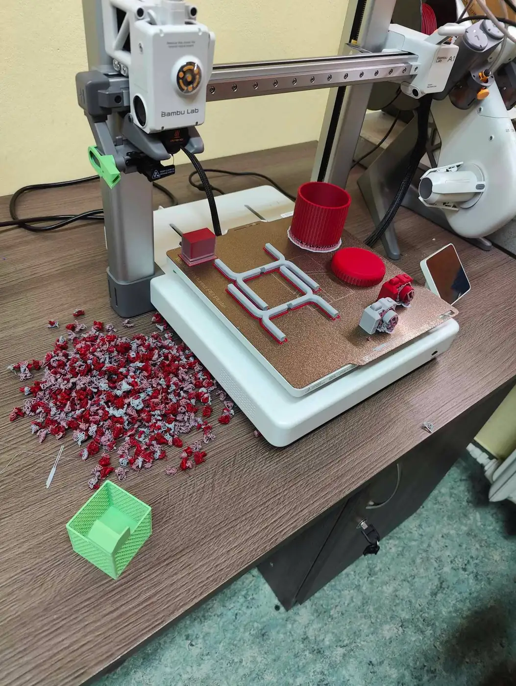
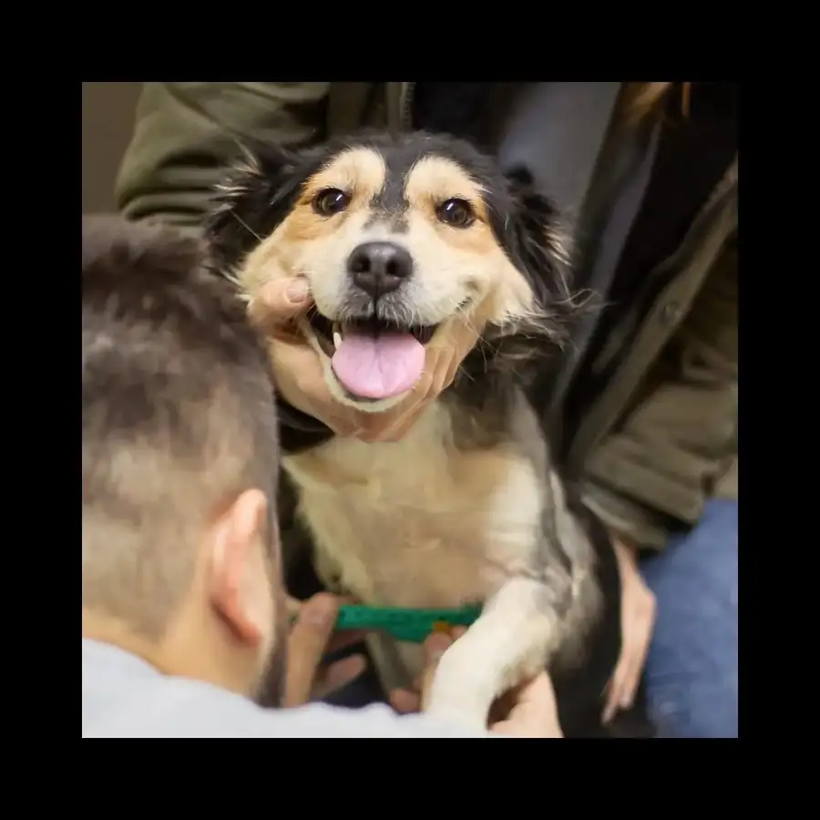
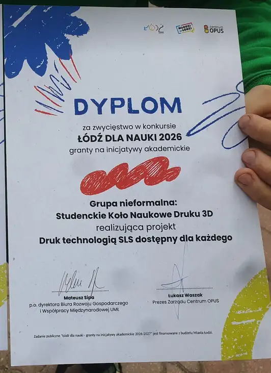
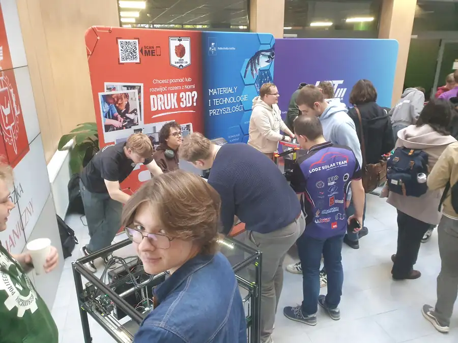
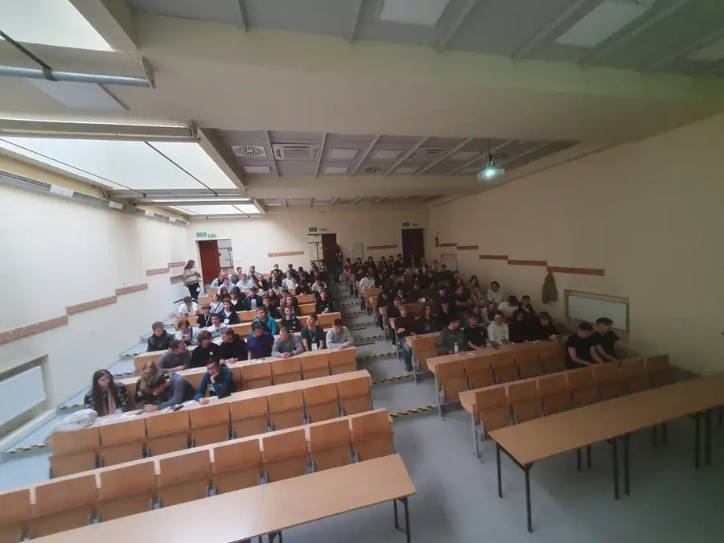
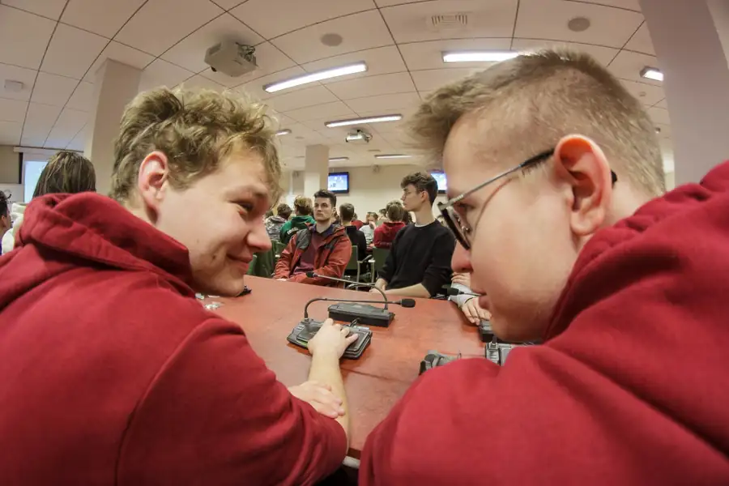

Studenckie Koło Naukowe · Wydział Mechaniczny PŁ
SKN Druku 3D
Każdy projekt to pętla: projekt, druk, test, modyfikacja — i od nowa.
Kim jesteśmy
Na spotkaniach drukujemy, naprawiamy drukarki i rozwijamy własne konstrukcje — od rozdrabniacza PETG po wielkoformatowego CoreXY składanego od podstaw. Szukamy nie tylko osób zakręconych samym drukiem: przydają się też projektanci instalacji artystycznych z 3D w tle, ludzie od social mediów i osoby, które ogarną prowadzenie projektów. W skrócie: każdy jest mile widziany — doświadczenie nie jest wymagane.
Mamy pracownię z drukarkami Bambu Lab, rozdrabniaczem i wytłaczarką do recyklingu PETG oraz suszarnią filamentu; w budowie stoi wielkoformatowy Rat Rig V-Core 4, a z grantu „Łódź dla nauki” dochodzi SLS. Dołączenie jest proste: napisz do nas przez Messengera albo maila — reszta to już drukowanie.
- od
- 2023
- drukarki w pracowni
- 4
- + dostęp przez instytut
- 20+

Co robimy
-

Recykling PETG
Odpady po wydrukach trafiają do rozdrabniacza i wracają jako granulat — stanowisko składa się z 8 500 zł dotacji (Fundacja PŁ + IIM).
FDM · PETG
-

Wytłaczarka ZPU3
Własna wytłaczarka filamentu (5 000 zł od ZPU3) — z granulatu powstaje szpula, która zamyka pętlę recyklingu.
FDM · filament
-

Wózek dla psa
Części do wózka dla niepełnosprawnych psów drukujemy dla koła ARTUDITU — ich projekt, nasze dysze.
FDM
-
Drukowany dron
Konstrukcja z drukowanymi częściami — projekt, który pokazujemy na wydarzeniach: od Formnext po Piknik Nauki.
FDM
-

SLS dla każdego
Grant „Łódź dla nauki” (18 000 zł): druk spiekany z proszku — geometrie nieosiągalne dla FDM, bez podpór.
SLS
-

CoreXY Rat Rig V-Core 4
Grant RKN 2026: wielkoformatowa drukarka CoreXY składana od podstaw — stanowisko dydaktyczno-prototypowe.
CoreXY
Jak to u nas wygląda






Kto to robi
-
inż. Rafał Parfieniuk
Prezes
-
Szymon Zagaj
Wiceprezes
-
Krzysztof Jachowicz
Sekretarz
-
prof. dr hab. inż. Jacek Sawicki
Opiekun koła
Twoja kolej
Uczymy wszystkiego od zera — sprzęt, warsztat i wsparcie są po naszej stronie; filament przynosisz własny, bo na jego finansowanie jeszcze pracujemy. Szukamy osób od drukowania i budowania, ale też takich, które poprowadzą nasze social media albo wezmą na siebie prowadzenie projektów.
Zapisy są tylko dla studentów Politechniki — po kliknięciu zaloguj się mailem uczelnianym PŁ.